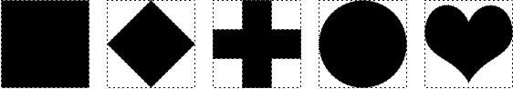
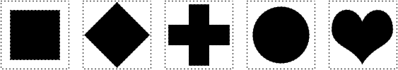
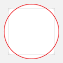
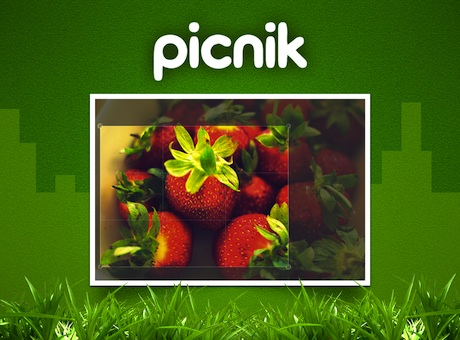
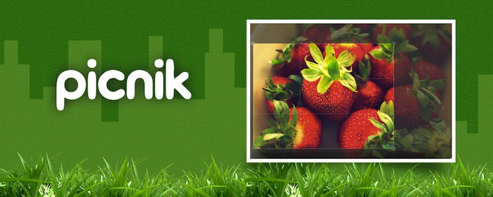
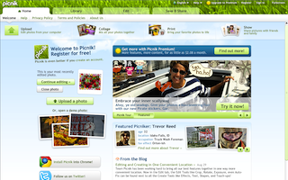
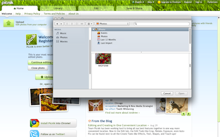
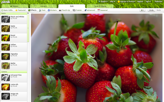
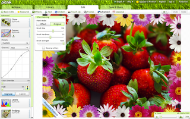
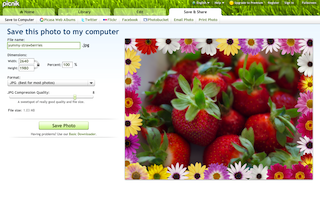

{kind=link}

You need to supply several kinds of images to be used in the Chrome Web Store and the Google Chrome browser:
Only the app icon, a small promotional image, and a screenshot are mandatory. However, providing attractive versions of both required and optional images increases your app's chances of getting noticed. For example, your app can't be featured unless you provide a large or marquee promotional image.
You must provide a 128x128-pixel app icon image in the ZIP file of your app. Some requirements for the image:
The image that you provide is used to generate images in several other sizes. For example, a 96x96 version (where the icon is approximately 72x72) is used in the browser's New Tab page.
Testing tip: To make sure your icon looks good, preview your app's listing in the Chrome Web Store. If you're working on an installable web app, you also need to view your icon in the New Tab page. To do so, you can load the unpacked app, bring up the New Tab page, and then look at the icon against a variety of backgrounds by applying a few themes.
When you design the icon, keep the following advice in mind:
Here are some icons that follow these guidelines.
Note: If you upload an image that has no alpha, it will be placed in a frame with rounded corners (12-pixel corner radius).
All app icons should have the same visual weight, occupying roughly the same area. As the following figure shows, when you size an icon to fill the available area, square and circular icons are significantly larger than they should be, compared to icons with other shapes.

Normalizing the icon sizes, as the next figure shows, gives the icons roughly even area and visual weight.

You can use the following template images to help you judge how large your image's artwork should be. The templates show the correct size for a square and a circle, but these are merely guides; icons that have pointy bits might stray outside these areas. If an irregularly shaped icon takes up very little area and is mostly negative space, using the entire 128x128 area might be acceptable.
 |
 | |
| Template for square icons | Template for circular icons | Template for irregular icons |
You can follow some rules of thumb for artwork size. For a square icon, make the artwork 96x96 pixels. For other icons that are squarish, make the artwork's width 75-80% of the total width of the image. A circular icon should have a diameter of approximately 112 pixels, or 85% to 90% of the image width. Icons with irregular shapes should have similar weights.
The following figures show square and circular icons, comparing them with the templates.

Here's an example of an irregularly shaped icon. In this case, the icon follows neither the square nor circular guidelines, but it fits near them both.

For flexibility and consistency, app icons should be front-facing. Subtle tweaks of perspective that give a sense of tangibility are OK, but avoid dramatic angles.

|
|
| Good icons (front facing) | Bad icons (too-drastic perspective) |
You must provide at least a small, 440x280-pixel promotional image. You can also provide other images that the store can use to promote your app.
Note: Unlike screenshots, promotional images are not currently locale-specific. If your app supports multiple locales, we recommend either avoiding text by focusing on graphical representations of the app's capabilities, or targeting the promo images to the locale in which you have the most users.
Note: If your images refer to Google brands, follow the Branding Guidelines.
Although only a small promotional image is required, you can also supply larger promotional images if you'd like your app to be featured more prominently in the Chrome Web Store. Here are the image sizes you can provide:
Note: Apps that don't have a small promotional image will be shown after apps that do have that image. If your app was published before the small promotional image was required, you should add that image so your app can be displayed more prominently.
Promotional images are your chance to capture users' attention and entice them to learn more. Don't just use a screenshot; your images should primarily communicate the brand. Here are some rules of thumb for designing your images:
The following graphics are examples of the promotional images for an app:
|  | |
| Small promo image (440x280) (full size) | Large promo image (920x680) (full size) |
|  |
| Marquee (1400x560) (full size) |
Note: You can find the review status of your promo image in each item's listing within your developer dashboard. Click on 'Edit' on the item's listing, and scroll down to the Promotional Images section. If you have questions about the status of your promo images, contact cws-assets@google.com.
Here is a description of the review statuses:
You must provide at least 1—and preferably 4 or 5—screenshots of your app to be displayed in the app's store listing. If your app supports multiple locales, you can provide locale-specific screenshots as described in Internationalizing Your App.
When you edit your app's listing, mousing over a screenshot's thumbnail brings up controls that let you delete the screenshot or change its position.
Each screenshot should be as follows:
Note: 1280x800 screenshots are preferrable, as larger screenshots look better on high-resolution displays. Currently, all screenshots are downscaled to 640x400 pixels. If your screenshots do not look good when downscaled (for example, they have a lot of text) or if 1280x800 is too big for your app (for example, screenshots for a low-resolution game), you can upload 640x400 screenshots.
As an example, here are five screenshot images for an app:
|  |  |
| Screenshot #1 (full size) | Screenshot #2 (full size) |
|  |  |  |
| Screenshot #3 (full size) | Screenshot #4 (full size) | Screenshot #5 (full size) |
Next, read Publishing Your App.
{kind=link}
{kind=link}
{kind=link}
{kind=link}
{kind=link}
{kind=link}
{kind=link}
{kind=link}
{kind=link}
{kind=link}
{kind=link}